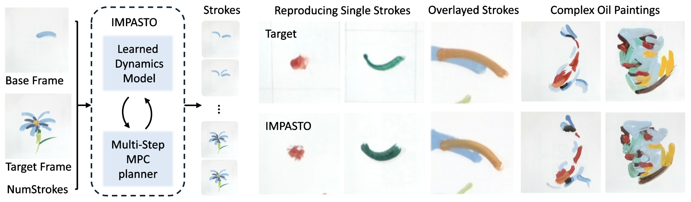
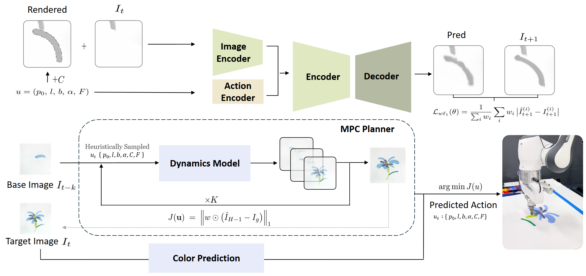
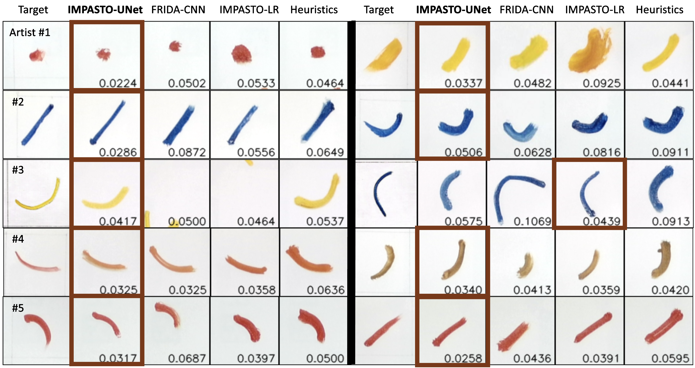
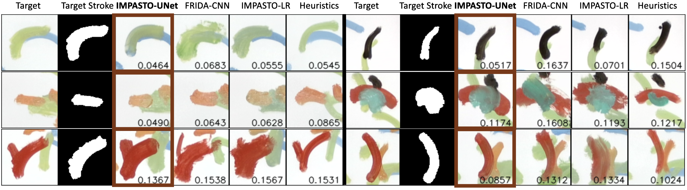
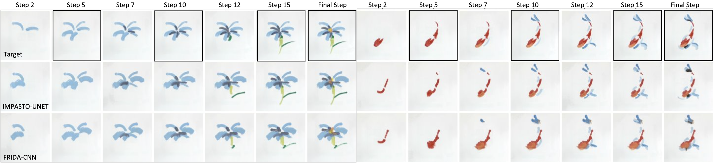
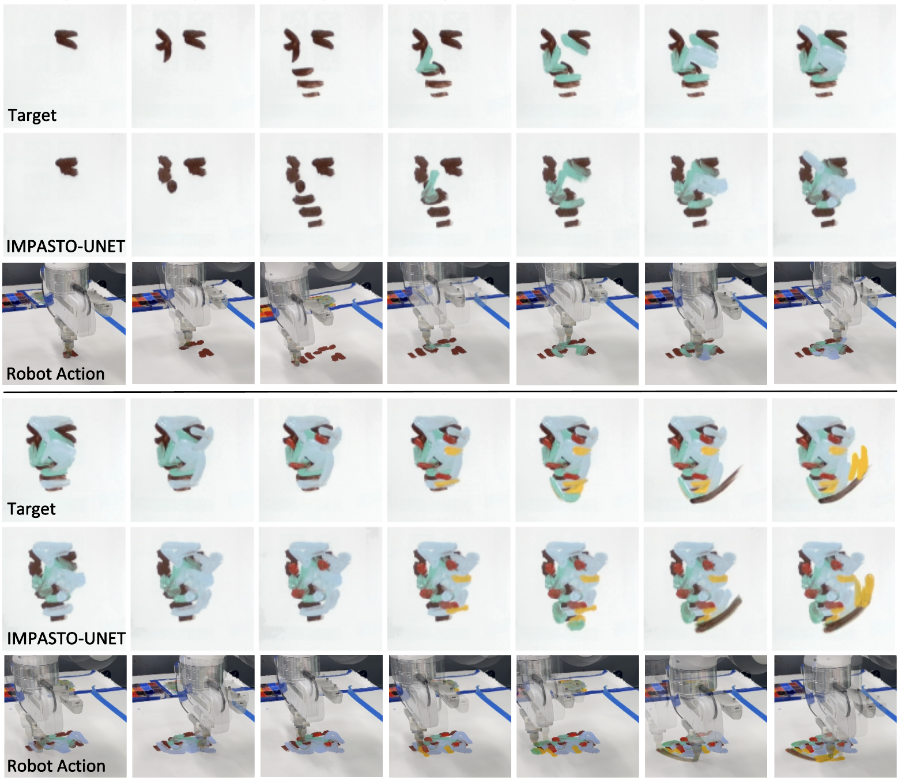

[Task-Conditioned Results Title]


[Placeholder caption...]
Robotic reproduction of oil paintings using soft brushes and pigments requires force-sensitive control of deformable tools, prediction of brushstroke effects, and multi-step stroke planning, often without human step-by-step demonstrations or faithful simulators. Given only a target oil painting image, can a robot infer and execute the stroke trajectories, forces, and colors needed to reproduce it? We present IMPASTO, a robotic oil-painting system that integrates learned pixel dynamics models with model-based planning. The dynamics models predict canvas updates from image observations and parameterized stroke actions; a receding-horizon model predictive control optimizer then plans trajectories and forces, while a force-sensitive controller executes strokes on a 7-DoF robot arm. IMPASTO learns solely from robot self-play and achieves high-fidelity replication on human artists' single-stroke datasets and multi-stroke artworks, outperforming baselines in reproduction accuracy. By integrating low-level force control, learned dynamics models, and high-level closed-loop planning, IMPASTO is a step toward robots that can paint with the finesse of a human artist by manipulating real brushes and paints.

IMPASTO is a robotic oil painting system that integrates learned neural dynamics models with model-based planning algorithms to accurately replicate human artists' brushstrokes and artworks.

Overview of the learning and planning framework. Top: IMPASTO-UNet's neural pixel dynamics model, which combines an image encoder and an action encoder to predict the effect of a stroke. The model is trained using a weighted l1 loss. Bottom: To find one or more consecutive strokes between a base image and a target image, an MPC-based planner optimizes stroke parameters with a weighted l1 image objective in a receding-horizon, closed loop.

Target brushstrokes from five human artists (two examples per artist from the overall 60 strokes) and the strokes reproduced by the robot using different methods. The numbers shown are the weighted l1 loss between the target and the painted strokes. Instances with the best performances are highlighted with bold borders. Overall, IMPASTO-UNet more accurately reproduced human brushstrokes.

Qualitative results showing the target strokes from overlaid strokes and the strokes painted by the robot using different methods. Instances with the best performances are highlighted with bold borders. The base images (canvas states) already have painted strokes. This requires the dynamics models to make accurate predictions given the noisy background. The numbers shown are the weighted l1 loss. Note that the loss is only calculated around the target stroke area. IMPASTO-UNet is more accurate in reproducing human brushstrokes given the noisy base images.

Qualitative results showing the target paintings and the painting produced by the robot using IMPASTO vs. FRIDA. The planning horizon was set to be five, and the framed images are the targets for MPC. Our method can more accurately reproduce oil paintings.

IMPASTO was able to replicate a complex oil painting with single-step planning.
Failure mode: worn-out brush and overly dry or wet pigments introduce stochasticity during execution even though the prediction and planning are accurate.